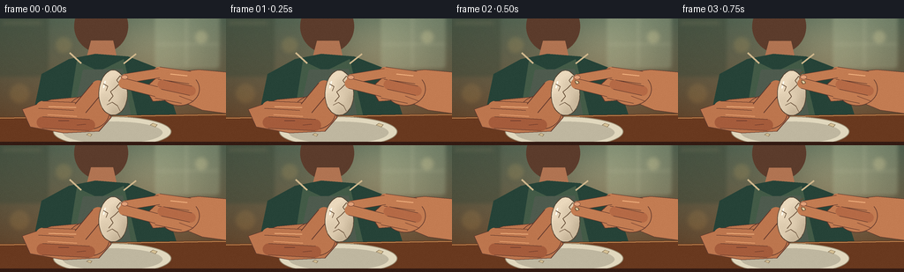
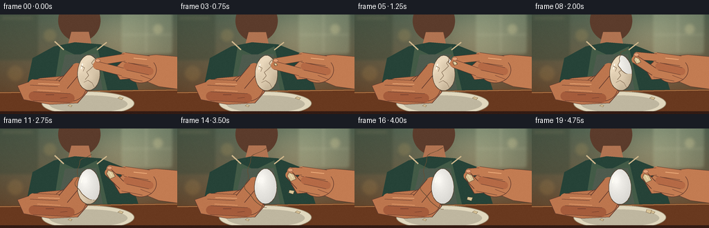

CODING AGENTS AS PIXEL WORLD MODELS
traex/GPT-5.6-Sol · motion_rationality_0011
点击播放 · 原生 RGB 像素
逐轮保存的候选
回放视频、检查图与代码变化。
每份候选均可单独播放。实际图片检查记录在下方工具轨迹中。
候选 01播放与检查图
点击播放 · 原生 RGB 像素

展开代码变化
--- 上一保存版本
+++ 本次保存版本
@@ -0,0 +1,241 @@
+from pathlib import Path
+import json, math
+import numpy as np
+from PIL import Image, ImageDraw, ImageFilter
+import artifact_io
+
+CASE_DIR = Path(__file__).resolve().parent
+SPEC = json.loads((CASE_DIR / 'task_spec.json').read_text())
+W, H, N = SPEC['width'], SPEC['height'], SPEC['frames']
+S = 4
+w, h = W*S, H*S
+
+def sc(v): return int(round(v*S))
+def pts(seq): return [(sc(x),sc(y)) for x,y in seq]
+
+def ellipse(draw, box, fill, outline=None, width=1):
+ draw.ellipse(tuple(sc(x) for x in box), fill=fill, outline=outline, width=sc(width) if outline else 1)
+def polygon(draw, xy, fill, outline=None, width=1):
+ draw.polygon(pts(xy), fill=fill)
+ if outline: draw.line(pts(xy+[xy[0]]), fill=outline, width=sc(width), joint='curve')
+def line(draw, xy, fill, width=1, joint='curve'):
+ draw.line(pts(xy), fill=fill, width=sc(width), joint=joint)
+
+def capsule(draw, a, b, radius, fill, outline=None):
+ ax,ay=a; bx,by=b
+ dx,dy=bx-ax,by-ay; L=max(.001,math.hypot(dx,dy)); nx,ny=-dy/L*radius,dx/L*radius
+ polygon(draw, [(ax+nx,ay+ny),(bx+nx,by+ny),(bx-nx,by-ny),(ax-nx,ay-ny)], fill)
+ ellipse(draw,(ax-radius,ay-radius,ax+radius,ay+radius),fill)
+ ellipse(draw,(bx-radius,by-radius,bx+radius,by+radius),fill)
+ if outline:
+ line(draw,[(ax+nx,ay+ny),(bx+nx,by+ny)],outline,0.7)
+ line(draw,[(ax-nx,ay-ny),(bx-nx,by-ny)],outline,0.7)
+
+def smoothstep(x):
+ x=max(0,min(1,x)); return x*x*(3-2*x)
+
+def background(frame):
+ # Warm, softly defocused kitchen with mild photographic vignette.
+ yy,xx=np.mgrid[0:h,0:w]
+ X=xx/S; Y=yy/S
+ base=np.zeros((h,w,3),dtype=np.float32)
+ top=np.array([96,111,91]); bottom=np.array([116,76,47])
+ q=(Y/H)[...,None]
+ base=top*(1-q)+bottom*q
+ # central window glow
+ glow=np.exp(-(((X-181)/59)**2+((Y-32)/50)**2))*42
+ base += glow[...,None]*np.array([1,.91,.72])
+ # vignette
+ vig=np.clip(((X-128)/170)**2+((Y-72)/105)**2,0,1)[...,None]
+ base-=vig*np.array([24,22,18])
+ im=Image.fromarray(np.uint8(np.clip(base,0,255)),'RGB')
+ d=ImageDraw.Draw(im,'RGBA')
+ # upper cabinets and window bokeh
+ d.rounded_rectangle((sc(-9),sc(-12),sc(55),sc(66)),radius=sc(4),fill=(63,73,57,125))
+ d.rectangle((sc(3),sc(3),sc(47),sc(7)),fill=(180,161,119,32))
+ d.rounded_rectangle((sc(176),sc(-9),sc(248),sc(56)),radius=sc(3),fill=(173,185,151,80),outline=(222,220,178,48),width=sc(1))
+ d.line((sc(211),0,sc(211),sc(55)),fill=(229,225,189,48),width=sc(2))
+ d.line((sc(176),sc(29),sc(248),sc(29)),fill=(229,225,189,40),width=sc(2))
+ for bx,by,br,c in [(72,30,9,(235,190,104,36)),(228,21,7,(255,239,177,56)),(22,85,11,(235,176,89,31)),(199,70,5,(251,213,142,38))]:
+ d.ellipse((sc(bx-br),sc(by-br),sc(bx+br),sc(by+br)),fill=c)
+ im=im.filter(ImageFilter.GaussianBlur(sc(2.1)))
+ return im
+
+def draw_person_bg(im, t):
+ d=ImageDraw.Draw(im,'RGBA')
+ bob=0.45*math.sin(t*math.pi*2)
+ # head/neck cropped and deliberately out of focal plane
+ ellipse(d,(84,-22+bob,145,39+bob),(92,60,44,205))
+ polygon(d,[(103,25+bob),(128,25+bob),(134,52),(96,52)],(177,116,82,235))
+ # torso, shoulders, and apron: enough context to read as a person cooking
+ polygon(d,[(47,63),(78,46),(108,40),(145,43),(183,58),(211,144),(30,144)],(38,67,56,255))
+ polygon(d,[(87,48),(112,60),(140,46),(163,144),(72,144)],(67,91,71,245))
+ # apron bib
+ polygon(d,[(94,58),(139,57),(154,144),(75,144)],(78,91,78,235))
+ line(d,[(92,51),(79,39)],(208,184,141,100),2)
+ line(d,[(140,51),(154,40)],(208,184,141,100),2)
+ # table and plate
+ polygon(d,[(0,112),(256,108),(256,144),(0,144)],(105,57,31,255))
+ line(d,[(0,113),(256,109)],(211,150,91,70),1)
+ ellipse(d,(60,111,194,146),(225,216,190,230),(151,137,111,160),1)
+ ellipse(d,(71,117,184,142),(191,183,160,170))
+ # shells already on plate, accumulating subtly
+ for i,(x,y,r,ang) in enumerate([(83,123,5,-.3),(174,121,4,.4),(101,132,3,.1)]):
+ polygon(d,[(x-r,y),(x-r*.2,y-r*.55),(x+r,y-r*.15),(x+r*.45,y+r*.55)],(215,194,150,245),(123,102,73,170),.5)
+
+def egg_masks(cx,cy,progress):
+ # Render egg from fixed geometry to masks at supersampled resolution.
+ egg=Image.new('L',(w,h),0); de=ImageDraw.Draw(egg)
+ eggpoly=[]
+ for k in range(80):
+ a=2*math.pi*k/80
+ # tapered top, broad base
+ y=math.sin(a); x=math.cos(a)
+ rx=17.3*(.87+0.13*(y+1)/2)
+ eggpoly.append((cx+rx*x,cy+25.5*y))
+ de.polygon(pts(eggpoly),fill=255)
+ # irregular radial reveal region begins at upper-right and expands naturally
+ rev=Image.new('L',(w,h),0); dr=ImageDraw.Draw(rev)
+ if progress>0:
+ p=smoothstep(progress)
+ rcx=143-7*p; rcy=66+6*p
+ rr=5+34*p
+ jag=[]
+ for k in range(72):
+ a=2*math.pi*k/72
+ noise=1+0.08*math.sin(5*a+0.6)+0.05*math.sin(11*a+1.7)
+ rx=rr*noise; ry=rr*1.18*(1+0.03*math.sin(7*a))
+ jag.append((rcx+rx*math.cos(a),rcy+ry*math.sin(a)))
+ dr.polygon(pts(jag),fill=255)
+ rev=np.minimum(np.asarray(egg,dtype=np.uint8),np.asarray(rev,dtype=np.uint8))
+ shell=np.asarray(egg,dtype=np.uint8).copy()
+ shell[rev>0]=0
+ return egg, Image.fromarray(shell), Image.fromarray(rev)
+
+def draw_left_hand(im, cx, cy, t):
+ d=ImageDraw.Draw(im,'RGBA')
+ skin=(189,118,78,255); skin2=(165,92,60,255); edge=(95,55,43,125); hi=(235,170,121,95)
+ # wrist and palm support the egg, anatomically overlapping fingers
+ polygon(d,[(25,103),(58,92),(91,89),(116,95),(126,112),(112,128),(72,130),(34,123)],skin,edge,.8)
+ ellipse(d,(76,87,124,126),skin,edge,.8)
+ # four curled fingers visible beneath/left of egg
+ capsule(d,(48,101),(96,103),7.2,skin,edge)
+ capsule(d,(43,109),(96,112),7.0,skin,edge)
+ capsule(d,(48,118),(101,121),6.5,skin2,edge)
+ # thumb rises behind the egg
+ capsule(d,(91,102),(111,78),7.7,skin,edge)
+ line(d,[(55,100),(86,101)],hi,1.3)
+ line(d,[(54,109),(87,111)],(233,162,113,60),1)
+ # knuckle creases
+ line(d,[(66,116),(78,116)],(104,56,43,95),.7)
+ line(d,[(87,121),(97,120)],(104,56,43,95),.7)
+
+def paste_egg(im,cx,cy,progress):
+ egg,shell,reveal=egg_masks(cx,cy,progress)
+ yy,xx=np.mgrid[0:h,0:w]; X=xx/S;Y=yy/S
+ # cooked egg white: soft ivory gradient with pearly highlight
+ rr=np.sqrt(((X-(cx-5))/20)**2+((Y-(cy-8))/30)**2)
+ white=np.zeros((h,w,4),dtype=np.uint8)
+ shade=np.clip(247-25*rr+8*np.exp(-(((X-(cx-7))/7)**2+((Y-(cy-11))/11)**2)),207,251)
+ white[:,:,:3]=np.stack([shade,shade-2,shade-7],axis=2).astype(np.uint8)
+ white[:,:,3]=np.asarray(egg)
+ layer=Image.fromarray(white,'RGBA')
+ im.alpha_composite(layer)
+ # shell warm cream with directional shade and subtle speckle
+ shellarr=np.zeros((h,w,4),dtype=np.uint8)
+ sh=np.clip(222-18*((X-cx)/20)-16*((Y-cy)/28)+6*np.sin(X*.23)*np.sin(Y*.19),177,235)
+ shellarr[:,:,0]=sh.astype(np.uint8); shellarr[:,:,1]=(sh-18).astype(np.uint8); shellarr[:,:,2]=(sh-46).astype(np.uint8)
+ shellarr[:,:,3]=np.asarray(shell)
+ im.alpha_composite(Image.fromarray(shellarr,'RGBA'))
+ d=ImageDraw.Draw(im,'RGBA')
+ # egg contour and highlight
+ # fixed outline polygon
+ contour=[]
+ for k in range(80):
+ a=2*math.pi*k/80; y=math.sin(a); x=math.cos(a); rx=17.3*(.87+.13*(y+1)/2)
+ contour.append((cx+rx*x,cy+25.5*y))
+ line(d,contour+[contour[0]],(83,65,48,150),.7)
+ line(d,[(cx-9,cy-13),(cx-11,cy-5)],(255,255,244,105),1.4)
+ # shell fracture network, progressively only lines remaining on shell
+ cracks=[[(cx+8,cy-19),(cx+4,cy-14),(cx+7,cy-10),(cx+2,cy-5)],
+ [(cx+8,cy-19),(cx+13,cy-15),(cx+11,cy-10)],
+ [(cx+2,cy-5),(cx-3,cy-1),(cx,cy+4),(cx-5,cy+10)],
+ [(cx-7,cy+14),(cx-1,cy+11),(cx+5,cy+15),(cx+8,cy+21)],
+ [(cx-11,cy-10),(cx-6,cy-7),(cx-8,cy-2)]]
+ for cr in cracks: line(d,cr,(104,80,57,160),.65)
+ # jagged dark rim where shell meets exposed white, sells peeling depth
+ if progress>.03 and progress<.97:
+ p=smoothstep(progress); a0=math.pi*.56; a1=math.pi*1.43
+ rim=[]
+ rcx=143-7*p; rcy=66+6*p; rr=5+34*p
+ for k in range(25):
+ a=a0+(a1-a0)*k/24
+ noise=1+.08*math.sin(5*a+.6)+.05*math.sin(11*a+1.7)
+ rim.append((rcx+rr*noise*math.cos(a),rcy+rr*1.18*(1+.03*math.sin(7*a))*math.sin(a)))
+ line(d,rim,(103,77,51,180),.8)
+
+def draw_right_hand(im, f, cx, cy, progress):
+ d=ImageDraw.Draw(im,'RGBA')
+ skin=(195,124,82,255); edge=(94,55,43,125); hi=(242,177,127,85)
+ # peeling gesture: fingertips travel out and upward while maintaining pinch
+ p=smoothstep(f/19)
+ # Two-stage hand motion avoids impossible sliding; grasp starts near upper-right.
+ pull=smoothstep(max(0,(f-2)/14))
+ tx=cx+12+24*pull
+ ty=cy-14-10*math.sin(math.pi*pull*.85)
+ # palm and wrist enter from right, articulated toward pinch point
+ polygon(d,[(258,61),(225,58),(198,61),(176,68),(164,79),(173,94),(200,92),(229,104),(258,108)],skin,edge,.8)
+ ellipse(d,(180,61,226,99),skin,edge,.8)
+ # index finger approaches above, slightly bent
+ capsule(d,(215,67),(180,62),7.0,skin,edge)
+ capsule(d,(180,62),(tx+2,ty-2),5.3,skin,edge)
+ # thumb comes from below to pinch
+ capsule(d,(207,89),(177,83),7.5,skin,edge)
+ capsule(d,(177,83),(tx,ty+3.5),5.8,skin,edge)
+ # middle finger tucked behind
+ capsule(d,(216,82),(184,75),5.4,(181,106,70,255),edge)
+ # fingertip highlights and nails
+ line(d,[(193,63),(212,65)],hi,1.2)
+ ellipse(d,(tx-2.5,ty-6.0,tx+4.8,ty-1.0),(226,160,120,150),(118,72,56,90),.5)
+ line(d,[(203,88),(219,94)],(112,63,48,70),.8)
+ # shell piece gripped and carried away; size grows as it tears free
+ if f>=2:
+ q=smoothstep((f-2)/10)
+ fw=3.5+6*q; fh=4+9*q
+ piece=[(tx-1,ty),(tx+fw*.65,ty+fh*.2),(tx+fw,ty+fh*.72),(tx+fw*.15,ty+fh),(tx-fw*.35,ty+fh*.42)]
+ polygon(d,piece,(218,197,151,255),(103,76,51,185),.7)
+ line(d,[(tx+1,ty+2),(tx+fw*.48,ty+fh*.63)],(246,231,194,130),.7)
+
+def foreground_details(im, f):
+ d=ImageDraw.Draw(im,'RGBA')
+ # A tiny newly dropped shell fragment late in the action, on a plausible downward path.
+ if f>=14:
+ u=smoothstep((f-14)/5); x=165+4*u; y=91+28*u
+ polygon(d,[(x-3,y-2),(x+4,y-1),(x+2,y+4),(x-4,y+2)],(218,198,153,240),(105,77,53,150),.6)
+ # foreground depth strip
+ d.rectangle((0,sc(140),w,h),fill=(51,27,19,80))
+
+def make_frame(f):
+ t=f/(N-1)
+ im=background(t).convert('RGBA')
+ draw_person_bg(im,t)
+ # subtle shared body movement, but no jitter
+ cx=128+0.8*math.sin(t*math.pi*1.7)
+ cy=84+0.6*math.sin(t*math.pi*2)
+ draw_left_hand(im,cx,cy,t)
+ # progressive removal, with short observational holds at start/end
+ progress=smoothstep(max(0,min(1,(f-1)/17)))
+ paste_egg(im,cx,cy,progress)
+ draw_right_hand(im,f,cx,cy,progress)
+ foreground_details(im,f)
+ # mild depth-of-field glow and fine film grain, deterministic and temporally restrained
+ rgb=im.convert('RGB').resize((W,H),Image.Resampling.LANCZOS)
+ arr=np.asarray(rgb).astype(np.int16)
+ rng=np.random.default_rng(421) # static fine grain avoids temporal flicker
+ grain=rng.normal(0,0.75,(H,W,1))
+ arr=np.clip(arr+grain,0,255).astype(np.uint8)
+ return arr
+
+frames=np.stack([make_frame(i) for i in range(N)],axis=0)
+artifact_io.save(frames, CASE_DIR)
+print(f'Saved {frames.shape} RGB frames to {CASE_DIR}')
候选 02播放与检查图
点击播放 · 原生 RGB 像素

展开代码变化
--- 上一保存版本
+++ 本次保存版本
@@ -162,7 +162,15 @@
[(cx+2,cy-5),(cx-3,cy-1),(cx,cy+4),(cx-5,cy+10)],
[(cx-7,cy+14),(cx-1,cy+11),(cx+5,cy+15),(cx+8,cy+21)],
[(cx-11,cy-10),(cx-6,cy-7),(cx-8,cy-2)]]
- for cr in cracks: line(d,cr,(104,80,57,160),.65)
+ # Keep fractures on the brittle shell only; the revealed albumen becomes
+ # visibly smooth instead of retaining impossible painted-on crack lines.
+ crack_layer=Image.new('RGBA',(w,h),(0,0,0,0)); cd=ImageDraw.Draw(crack_layer,'RGBA')
+ for cr in cracks: line(cd,cr,(104,80,57,170),.65)
+ crack_alpha=np.asarray(crack_layer.getchannel('A'),dtype=np.uint16)
+ crack_alpha=(crack_alpha*np.asarray(shell,dtype=np.uint16)//255).astype(np.uint8)
+ crack_layer.putalpha(Image.fromarray(crack_alpha))
+ im.alpha_composite(crack_layer)
+ d=ImageDraw.Draw(im,'RGBA')
# jagged dark rim where shell meets exposed white, sells peeling depth
if progress>.03 and progress<.97:
p=smoothstep(progress); a0=math.pi*.56; a1=math.pi*1.43
候选 03播放与检查图

可观测工具轨迹
实际执行的命令与返回图片。
命令 1exit 0
/bin/bash -lc "ls -la && printf '\\n--- prompt.txt ---\\n' && cat prompt.txt && printf '\\n--- GENERATION_RULES.md ---\\n' && cat GENERATION_RULES.md && printf '\\n--- task_spec.json ---\\n' && cat task_spec.json"
命令 2exit 0
/bin/bash -lc "sed -n '1,260p' artifact_io.py"
命令 3exit 0
/bin/bash -lc "cat > generate.py <<'PY'
from pathlib import Path
import json, math
import numpy as np
from PIL import Image, ImageDraw, ImageFilter
import artifact_io
CASE_DIR = Path(__file__).resolve().parent
SPEC = json.loads((CASE_DIR / 'task_spec.json').read_text())
W, H, N = SPEC['width'], SPEC['height'], SPEC['frames']
S = 4
w, h = W*S, H*S
def sc(v): return int(round(v*S))
def pts(seq): return [(sc(x),sc(y)) for x,y in seq]
def ellipse(draw, box, fill, outline=None, width=1):
draw.ellipse(tuple(sc(x) for x in box), fill=fill, outline=outline, width=sc(width) if outline else 1)
def polygon(draw, xy, fill, outline=None, width=1):
draw.polygon(pts(xy), fill=fill)
if outline: draw.line(pts(xy+[xy[0]]), fill=outline, width=sc(width), joint='curve')
def line(draw, xy, fill, width=1, joint='curve'):
draw.line(pts(xy), fill=fill, width=sc(width), joint=joint)
def capsule(draw, a, b, radius, fill, outline=None):
ax,ay=a; bx,by=b
dx,dy=bx-ax,by-ay; L=max(.001,math.hypot(dx,dy)); nx,ny=-dy/L*radius,dx/L*radius
polygon(draw, [(ax+nx,ay+ny),(bx+nx,by+ny),(bx-nx,by-ny),(ax-nx,ay-ny)], fill)
ellipse(draw,(ax-radius,ay-radius,ax+radius,ay+radius),fill)
ellipse(draw,(bx-radius,by-radius,bx+radius,by+radius),fill)
if outline:
line(draw,[(ax+nx,ay+ny),(bx+nx,by+ny)],outline,0.7)
line(draw,[(ax-nx,ay-ny),(bx-nx,by-ny)],outline,0.7)
def smoothstep(x):
x=max(0,min(1,x)); return x*x*(3-2*x)
def background(frame):
# Warm, softly defocused kitchen with mild photographic vignette.
yy,xx=np.mgrid[0:h,0:w]
X=xx/S; Y=yy/S
base=np.zeros((h,w,3),dtype=np.float32)
top=np.array([96,111,91]); bottom=np.array([116,76,47])
q=(Y/H)[...,None]
base=top*(1-q)+bottom*q
# central window glow
glow=np.exp(-(((X-181)/59)**2+((Y-32)/50)**2))*42
base += glow[...,None]*np.array([1,.91,.72])
# vignette
vig=np.clip(((X-128)/170)**2+((Y-72)/105)**2,0,1)[...,None]
base-=vig*np.array([24,22,18])
im=Image.fromarray(np.uint8(np.clip(base,0,255)),'RGB')
d=ImageDraw.Draw(im,'RGBA')
# upper cabinets and window bokeh
d.rounded_rectangle((sc(-9),sc(-12),sc(55),sc(66)),radius=sc(4),fill=(63,73,57,125))
d.rectangle((sc(3),sc(3),sc(47),sc(7)),fill=(180,161,119,32))
d.rounded_rectangle((sc(176),sc(-9),sc(248),sc(56)),radius=sc(3),fill=(173,185,151,80),outline=(222,220,178,48),width=sc(1))
d.line((sc(211),0,sc(211),sc(55)),fill=(229,225,189,48),width=sc(2))
d.line((sc(176),sc(29),sc(248),sc(29)),fill=(229,225,189,40),width=sc(2))
for bx,by,br,c in [(72,30,9,(235,190,104,36)),(228,21,7,(255,239,177,56)),(22,85,11,(235,176,89,31)),(199,70,5,(251,213,142,38))]:
d.ellipse((sc(bx-br),sc(by-br),sc(bx+br),sc(by+br)),fill=c)
im=im.filter(ImageFilter.GaussianBlur(sc(2.1)))
return im
def draw_person_bg(im, t):
d=ImageDraw.Draw(im,'RGBA')
bob=0.45*math.sin(t*math.pi*2)
# head/neck cropped and deliberately out of focal plane
ellipse(d,(84,-22+bob,145,39+bob),(92,60,44,205))
polygon(d,[(103,25+bob),(128,25+bob),(134,52),(96,52)],(177,116,82,235))
# torso, shoulders, and apron: enough context to read as a person cooking
polygon(d,[(47,63),(78,46),(108,40),(145,43),(183,58),(211,144),(30,144)],(38,67,56,255))
polygon(d,[(87,48),(112,60),(140,46),(163,144),(72,144)],(67,91,71,245))
# apron bib
polygon(d,[(94,58),(139,57),(154,144),(75,144)],(78,91,78,235))
line(d,[(92,51),(79,39)],(208,184,141,100),2)
line(d,[(140,51),(154,40)],(208,184,141,100),2)
# table and plate
polygon(d,[(0,112),(256,108),(256,144),(0,144)],(105,57,31,255))
line(d,[(0,113),(256,109)],(211,150,91,70),1)
ellipse(d,(60,111,194,146),(225,216,190,230),(151,137,111,160),1)
ellipse(d,(71,117,184,142),(191,183,160,170))
# shells already on plate, accumulating subtly
for i,(x,y,r,ang) in enumerate([(83,123,5,-.3),(174,121,4,.4),(101,132,3,.1)]):
polygon(d,[(x-r,y),(x-r*.2,y-r*.55),(x+r,y-r*.15),(x+r*.45,y+r*.55)],(215,194,150,245),(123,102,73,170),.5)
def egg_masks(cx,cy,progress):
# Render egg from fixed geometry to masks at supersampled resolution.
egg=Image.new('L',(w,h),0); de=ImageDraw.Draw(egg)
eggpoly=[]
for k in range(80):
a=2*math.pi*k/80
# tapered top, broad base
y=math.sin(a); x=math.cos(a)
rx=17.3*(.87+0.13*(y+1)/2)
eggpoly.append((cx+rx*x,cy+25.5*y))
de.polygon(pts(eggpoly),fill=255)
# irregular radial reveal region begins at upper-right and expands naturally
rev=Image.new('L',(w,h),0); dr=ImageDraw.Draw(rev)
if progress>0:
p=smoothstep(progress)
rcx=143-7*p; rcy=66+6*p
rr=5+34*p
jag=[]
for k in range(72):
a=2*math.pi*k/72
noise=1+0.08*math.sin(5*a+0.6)+0.05*math.sin(11*a+1.7)
rx=rr*noise; ry=rr*1.18*(1+0.03*math.sin(7*a))
jag.append((rcx+rx*math.cos(a),rcy+ry*math.sin(a)))
dr.polygon(pts(jag),fill=255)
rev=np.minimum(np.asarray(egg,dtype=np.uint8),np.asarray(rev,dtype=np.uint8))
shell=np.asarray(egg,dtype=np.uint8).copy()
shell[rev>0]=0
return egg, Image.fromarray(shell), Image.fromarray(rev)
def draw_left_hand(im, cx, cy, t):
d=ImageDraw.Draw(im,'RGBA')
skin=(189,118,78,255); skin2=(165,92,60,255); edge=(95,55,43,125); hi=(235,170,121,95)
# wrist and palm support the egg, anatomically overlapping fingers
polygon(d,[(25,103),(58,92),(91,89),(116,95),(126,112),(112,128),(72,130),(34,123)],skin,edge,.8)
ellipse(d,(76,87,124,126),skin,edge,.8)
# four curled fingers visible beneath/left of egg
capsule(d,(48,101),(96,103),7.2,skin,edge)
capsule(d,(43,109),(96,112),7.0,skin,edge)
capsule(d,(48,118),(101,121),6.5,skin2,edge)
# thumb rises behind the egg
capsule(d,(91,102),(111,78),7.7,skin,edge)
line(d,[(55,100),(86,101)],hi,1.3)
line(d,[(54,109),(87,111)],(233,162,113,60),1)
# knuckle creases
line(d,[(66,116),(78,116)],(104,56,43,95),.7)
line(d,[(87,121),(97,120)],(104,56,43,95),.7)
def paste_egg(im,cx,cy,progress):
egg,shell,reveal=egg_masks(cx,cy,progress)
yy,xx=np.mgrid[0:h,0:w]; X=xx/S;Y=yy/S
# cooked egg white: soft ivory gradient with pearly highlight
rr=np.sqrt(((X-(cx-5))/20)**2+((Y-(cy-8))/30)**2)
white=np.zeros((h,w,4),dtype=np.uint8)
shade=np.clip(247-25*rr+8*np.exp(-(((X-(cx-7))/7)**2+((Y-(cy-11))/11)**2)),207,251)
white[:,:,:3]=np.stack([shade,shade-2,shade-7],axis=2).astype(np.uint8)
white[:,:,3]=np.asarray(egg)
layer=Image.fromarray(white,'RGBA')
im.alpha_composite(layer)
# shell warm cream with directional shade and subtle speckle
shellarr=np.zeros((h,w,4),dtype=np.uint8)
sh=np.clip(222-18*((X-cx)/20)-16*((Y-cy)/28)+6*np.sin(X*.23)*np.sin(Y*.19),177,235)
shellarr[:,:,0]=sh.astype(np.uint8); shellarr[:,:,1]=(sh-18).astype(np.uint8); shellarr[:,:,2]=(sh-46).astype(np.uint8)
shellarr[:,:,3]=np.asarray(shell)
im.alpha_composite(Image.fromarray(shellarr,'RGBA'))
d=ImageDraw.Draw(im,'RGBA')
# egg contour and highlight
# fixed outline polygon
contour=[]
for k in range(80):
a=2*math.pi*k/80; y=math.sin(a); x=math.cos(a); rx=17.3*(.87+.13*(y+1)/2)
contour.append((cx+rx*x,cy+25.5*y))
line(d,contour+[contour[0]],(83,65,48,150),.7)
line(d,[(cx-9,cy-13),(cx-11,cy-5)],(255,255,244,105),1.4)
# shell fracture network, progressively only lines remaining on shell
cracks=[[(cx+8,cy-19),(cx+4,cy-14),(cx+7,cy-10),(cx+2,cy-5)],
[(cx+8,cy-19),(cx+13,cy-15),(cx+11,cy-10)],
[(cx+2,cy-5),(cx-3,cy-1),(cx,cy+4),(cx-5,cy+10)],
[(cx-7,cy+14),(cx-1,cy+11),(cx+5,cy+15),(cx+8,cy+21)],
[(cx-11,cy-10),(cx-6,cy-7),(cx-8,cy-2)]]
for cr in cracks: line(d,cr,(104,80,57,160),.65)
# jagged dark rim where shell meets exposed white, sells peeling depth
if progress>.03 and progress<.97:
p=smoothstep(progress); a0=math.pi*.56; a1=math.pi*1.43
rim=[]
rcx=143-7*p; rcy=66+6*p; rr=5+34*p
for k in range(25):
a=a0+(a1-a0)*k/24
noise=1+.08*math.sin(5*a+.6)+.05*math.sin(11*a+1.7)
rim.append((rcx+rr*noise*math.cos(a),rcy+rr*1.18*(1+.03*math.sin(7*a))*math.sin(a)))
line(d,rim,(103,77,51,180),.8)
def draw_right_hand(im, f, cx, cy, progress):
d=ImageDraw.Draw(im,'RGBA')
skin=(195,124,82,255); edge=(94,55,43,125); hi=(242,177,127,85)
# peeling gesture: fingertips travel out and upward while maintaining pinch
p=smoothstep(f/19)
# Two-stage hand motion avoids impossible sliding; grasp starts near upper-right.
pull=smoothstep(max(0,(f-2)/14))
tx=cx+12+24*pull
ty=cy-14-10*math.sin(math.pi*pull*.85)
# palm and wrist enter from right, articulated toward pinch point
polygon(d,[(258,61),(225,58),(198,61),(176,68),(164,79),(173,94),(200,92),(229,104),(258,108)],skin,edge,.8)
ellipse(d,(180,61,226,99),skin,edge,.8)
# index finger approaches above, slightly bent
capsule(d,(215,67),(180,62),7.0,skin,edge)
capsule(d,(180,62),(tx+2,ty-2),5.3,skin,edge)
# thumb comes from below to pinch
capsule(d,(207,89),(177,83),7.5,skin,edge)
capsule(d,(177,83),(tx,ty+3.5),5.8,skin,edge)
# middle finger tucked behind
capsule(d,(216,82),(184,75),5.4,(181,106,70,255),edge)
# fingertip highlights and nails
line(d,[(193,63),(212,65)],hi,1.2)
ellipse(d,(tx-2.5,ty-6.0,tx+4.8,ty-1.0),(226,160,120,150),(118,72,56,90),.5)
line(d,[(203,88),(219,94)],(112,63,48,70),.8)
# shell piece gripped and carried away; size grows as it tears free
if f>=2:
q=smoothstep((f-2)/10)
fw=3.5+6*q; fh=4+9*q
piece=[(tx-1,ty),(tx+fw*.65,ty+fh*.2),(tx+fw,ty+fh*.72),(tx+fw*.15,ty+fh),(tx-fw*.35,ty+fh*.42)]
polygon(d,piece,(218,197,151,255),(103,76,51,185),.7)
line(d,[(tx+1,ty+2),(tx+fw*.48,ty+fh*.63)],(246,231,194,130),.7)
def foreground_details(im, f):
d=ImageDraw.Draw(im,'RGBA')
# A tiny newly dropped shell fragment late in the action, on a plausible downward path.
if f>=14:
u=smoothstep((f-14)/5); x=165+4*u; y=91+28*u
polygon(d,[(x-3,y-2),(x+4,y-1),(x+2,y+4),(x-4,y+2)],(218,198,153,240),(105,77,53,150),.6)
# foreground depth strip
d.rectangle((0,sc(140),w,h),fill=(51,27,19,80))
def make_frame(f):
t=f/(N-1)
im=background(t).convert('RGBA')
draw_person_bg(im,t)
# subtle shared body movement, but no jitter
cx=128+0.8*math.sin(t*math.pi*1.7)
cy=84+0.6*math.sin(t*math.pi*2)
draw_left_hand(im,cx,cy,t)
# progressive removal, with short observational holds at start/end
progress=smoothstep(max(0,min(1,(f-1)/17)))
paste_egg(im,cx,cy,progress)
draw_right_hand(im,f,cx,cy,progress)
foreground_details(im,f)
# mild depth-of-field glow and fine film grain, deterministic and temporally restrained
rgb=im.convert('RGB').resize((W,H),Image.Resampling.LANCZOS)
arr=np.asarray(rgb).astype(np.int16)
rng=np.random.default_rng(421) # static fine grain avoids temporal flicker
grain=rng.normal(0,0.75,(H,W,1))
arr=np.clip(arr+grain,0,255).astype(np.uint8)
return arr
frames=np.stack([make_frame(i) for i in range(N)],axis=0)
artifact_io.save(frames, CASE_DIR)
print(f'Saved {frames.shape} RGB frames to {CASE_DIR}')
PY
python generate.py"命令 4exit 0
/bin/bash -lc "python generate.py && python - <<'PY'
from pathlib import Path
import numpy as np
p=Path('.')
z=np.load(p/'pixels.npz')['pixels']
print('pixels',z.shape,z.dtype,'frames',len(list((p/'frames').glob('*.png'))))
print('artifacts',[(x.name,x.stat().st_size) for x in [p/'pixels.npz',p/'index.html',p/'inspection.png']])
PY"视觉工具实际返回图片 1

视觉工具实际返回图片 2

保存候选 3 份；完成命令 4 次；可验证图片返回 2 张。原始 API 响应与完整日志保留在本地。